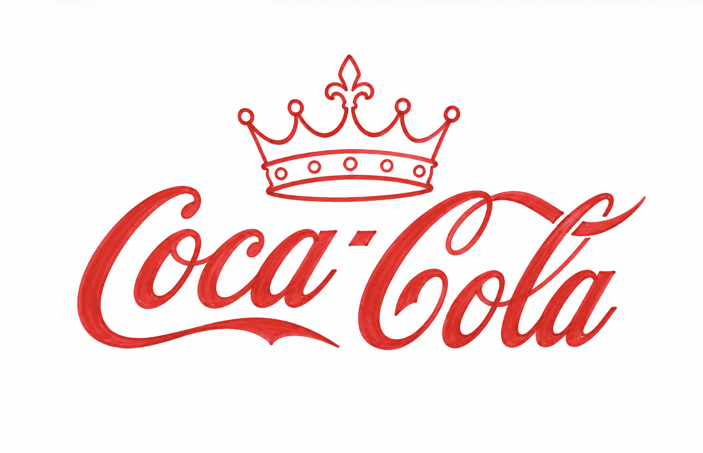

Current Logo vs New Logo
The current Coca-Cola Zero branding successfully uses the famous Coca-Cola script, which provides strong global recognition. However, it lacks a unique symbol that clearly separates Coca-Cola Zero from other products within the Coca-Cola range. My redesigned logo introduces a crown symbol while keeping the classic Coca-Cola typography. This approach allows the design to remain familiar to existing customers while creating a more distinctive identity. The new logo aims to improve recognition and make the product appear more premium and memorable.
Current Logo
New Logo
